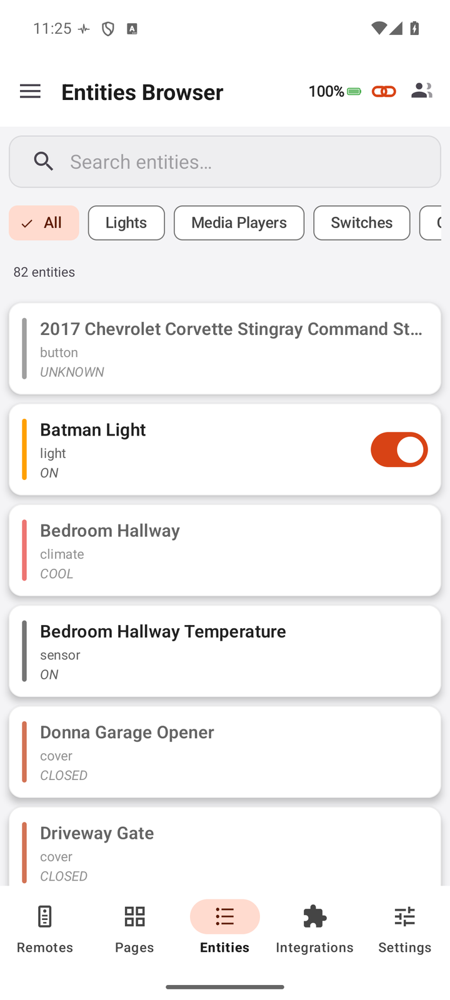
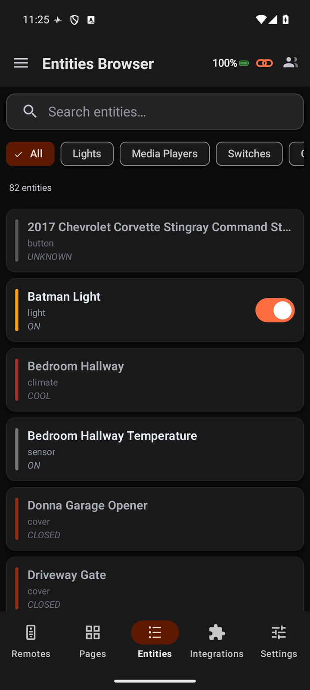
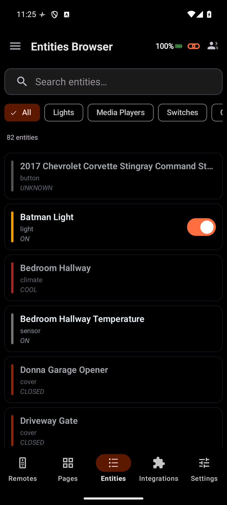
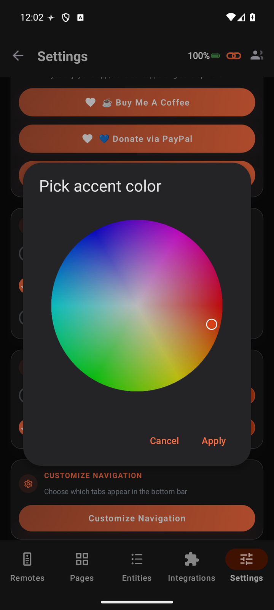

A premium native companion for the Unfolded Circle Remote Two and Remote 3. Run your activities, swipe through their custom pages, control every light, climate, cover, switch and media player, watch live now-playing with album art, and pin home-screen widgets - all over your own network. No ads. No subscriptions. No cloud.

UC Remote comes from Meir Miyara, an active open-source contributor in the Unfolded Circle community. The 45+ integrations he maintains - for AV receivers, media players, lighting, climate and more - bring those devices to your remote, and UC Remote puts them at your fingertips.
Real screenshots from UC Remote - dark by default, live data, and a layout designed for one-handed control. Tap any screen to enlarge.


UC Remote connects to your Unfolded Circle Remote Two or Remote 3 over Wi-Fi and mirrors everything it can do - activities, pages, entities and media - in a fast, native interface designed for the phone.
Start and stop full activities - Watch Shield TV, Xbox, PS5 - from a clean list. Your remote powers on the right gear and switches inputs; the app drops you straight into the controls for that activity.
Every activity carries its own custom pages. Swipe between a media now-playing view, a button remote, and tailored control tiles - laid out exactly as configured on your remote.
Album art, title and artist, transport controls (previous, play / pause, next), plus source and sound-mode selectors for your media players - all updating live as things change.
Lights with brightness and color, climate with setpoints, covers, switches, sensors and media players - each gets a control screen designed for it, with the right glyphs and actions, not a generic toggle.
Search and filter your entire setup - hundreds of entities - by type, whether lights, media players, switches or climate, and jump straight into any one of them.
Pair more than one Unfolded Circle remote and switch between them instantly. Each remembers its own profiles, pages and entities, so a Theater remote and an Office remote stay completely separate.
Drop Activities, Media Players, or Devices widgets right on your home screen, each pointed at a chosen remote, for one-tap control and live now-playing without even opening the app.
Light, Dark, and true-black AMOLED surfaces, plus a signature accent or your own custom color. Pick a look and the whole app repaints to match - on every screen.
UC Remote talks straight to your remote over your own Wi-Fi. A live event stream keeps state in sync and your commands go direct - PIN-paired, with no cloud relay and no account.
Pick a clean Light theme, a standard Dark, or true-black AMOLED for OLED screens - then set the signature accent or your own custom color. Every screen, on every page, repaints to match.



The accent color is yours to set. Choose the signature orange or pick any custom color from a full color picker - and the whole app repaints to match. Every highlight, toggle, active tab, progress bar and control across every screen takes on your color.

UC Remote pairs with your Unfolded Circle remote on your own Wi-Fi and talks to it directly, using the remote's own integration interface. Your setup never touches an external server.
Enter your Unfolded Circle Remote Two or Remote 3's IP address and the PIN it shows. UC Remote pairs securely and pulls in your profiles, pages, activities and entities.
A live two-way connection streams state from the remote - what's on, what's playing - while your taps go straight back as commands. No polling lag, no cloud round-trip.
Run activities, work the custom pages, drive every entity and media player, switch between multiple remotes, and pin widgets to your home screen - all from one app.
UC Remote is built privacy-first and local-only: no cloud dependency, no user account, and no data collection beyond crash reporting.
Every command and the live state stream happen directly between your phone and your remote over your local Wi-Fi. Nothing leaves your network.
No sign-up, no email, no MiyaraHub account. Pair with your remote's PIN and you're in control.
Pairing exchanges a secure access token that is stored locally on your device and used only to talk to your remote.
Remote addresses and app preferences are stored on your device. Nothing is synced to a server.
Commands are sent only when you act. Nothing fires automatically or in the background without your knowledge.
The only permission UC Remote needs is local network access, used solely to reach your remote on your Wi-Fi.
Everything you need to know about UC Remote.
UC Remote is an independent, third-party application developed and published by MiyaraHub Technologies LLC. It is not created by, affiliated with, endorsed by, sponsored by, or in any way officially connected with Unfolded Circle ApS or any of its subsidiaries or affiliates.
"Unfolded Circle," "Remote Two," "Remote 3," and all related product names and logos are trademarks or registered trademarks of their respective owners. All other trademarks referenced herein are the property of their respective owners.
References to these products on this page and within the app are made solely to identify compatibility and describe the app's functionality (nominative fair use). The trademark holders are not affiliated with MiyaraHub Technologies LLC and do not endorse this product.
UC Remote communicates with Unfolded Circle remotes using their local network integration interface. Use of this app is at your own risk. MiyaraHub Technologies LLC is not responsible for any misconfiguration or other problems arising from its use.
UC Remote is live on Google Play - premium, native, local-only control of your Unfolded Circle remote: activities, entities, media and widgets, all in one app.